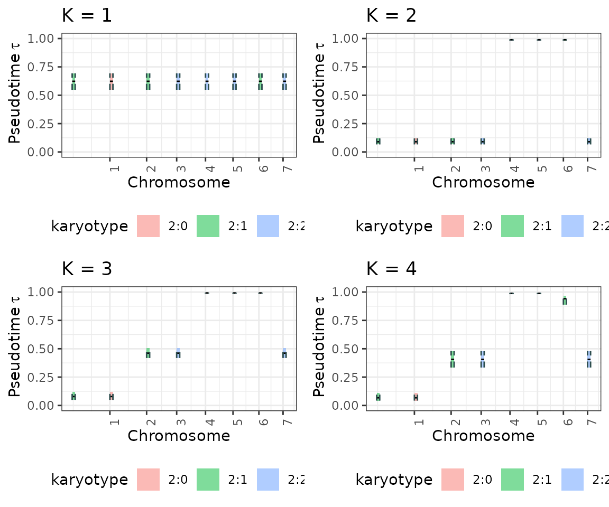

6. Simulate data
a6_Simulate_data.Rmd
library(dplyr)
n_clocks=3
n_events=8
purity=0.9
coverage=100
epsilon=0.20
seed = 123
tolerance = 0.0001
max_attempts = 2
INIT = TRUE
min_mutations_number = 3
cat("coverage: ", coverage)
mu = 1e-4 # mutation rate
cat("mutation rate: ", mu)
w = 1e-2 # cell division rate
cat("cell division rate: ", w)
l = 2e7 # length of the segment
cat("length of the segment: ", l)
time_interval = 7
cat("time_interval: ", time_interval)
res_simulate <- tickTack::get_simulation_tickTack(number_clocks=n_clocks,
number_events=n_events,
purity=purity,
coverage=coverage,
epsilon=epsilon,
seed = seed)
data_simulation = as.data.frame(res_simulate$data_simulation) %>% mutate(chr= 1:length(res_simulate$data_simulation$taus))
x = res_simulate$x
df = x$cna %>% left_join(data_simulation)
# timing inference ticktack hierarchical
x <- tickTack::fit_h(x, max_attempts=max_attempts, INIT=INIT, tolerance = tolerance)
results_simulated <- x$results_timing
results_model_selection <- tickTack::model_selection_h(results_simulated)## Warning: Some Pareto k diagnostic values are too high. See help('pareto-k-diagnostic') for details.
## Warning: Some Pareto k diagnostic values are too high. See help('pareto-k-diagnostic') for details.
best_K <- results_model_selection$best_K
data_simulation$taus## [1] 0.1028646 0.1028646 0.4348927 0.4348927 0.9849570 0.9849570 0.9849570
## [8] 0.4348927Results
The results object that is returned together with the
CNAqc input object contains four components: data,
draws_and_summary, log_lik_matrix_list and
elbo_iterations.
# View summary for a specific K, here K = 2
results <- x$resultsInterpreting the output
We can inspect the main output of interest to understand the timing
of clonal peaks. results$draws_and_summary contains: -
draws the draws from the approximate
posterior distribution of the taus and weights; -
summary a summary with the main statistics
of the approximate posterior distributions; -
summarized_results represents the clock
assignment, a tibble with the estimate of taus for each segment with a
copy number event that has been included in the hierarchical
inference
# View summary for a specific K, here K = 2
results$draws_and_summary[[2]]$summary## # A tibble: 50 × 7
## variable mean median sd mad q5 q95
## <chr> <dbl> <dbl> <dbl> <dbl> <dbl> <dbl>
## 1 tau[1] 0.0796 0.0786 0.0192 0.0190 0.0524 0.113
## 2 tau[2] 0.988 0.989 0.00359 0.00318 0.982 0.993
## 3 w[1,1] 0.985 0.988 0.0130 0.00844 0.959 0.997
## 4 w[2,1] 0.994 0.996 0.00501 0.00308 0.984 0.999
## 5 w[3,1] 0.735 0.738 0.0472 0.0508 0.657 0.804
## 6 w[4,1] 0.755 0.757 0.0287 0.0276 0.705 0.799
## 7 w[5,1] 0.00208 0.00116 0.00279 0.00109 0.000208 0.00726
## 8 w[6,1] 0.00546 0.00202 0.0114 0.00223 0.000220 0.0196
## 9 w[7,1] 0.0264 0.0150 0.0347 0.0138 0.00250 0.0863
## 10 w[8,1] 0.725 0.725 0.0268 0.0262 0.678 0.769
## # ℹ 40 more rows
# View detailed summarized results for a specific K, here K = 2
results$draws_and_summary[[2]]$summarized_results## # A tibble: 8 × 10
## segment_original_indx segment_name segment_id karyotype chr clock_mean
## <int> <chr> <dbl> <chr> <int> <dbl>
## 1 1 1_1_2e+07 1 2:1 1 0.0786
## 2 2 2_1_2e+07 2 2:0 2 0.0786
## 3 3 3_1_2e+07 3 2:1 3 0.0786
## 4 4 4_1_2e+07 4 2:2 4 0.0786
## 5 5 5_1_2e+07 5 2:2 5 0.989
## 6 6 6_1_2e+07 6 2:2 6 0.989
## 7 7 7_1_2e+07 7 2:1 7 0.989
## 8 8 8_1_2e+07 8 2:2 8 0.0786
## # ℹ 4 more variables: clock_low <dbl>, clock_high <dbl>, alpha <dbl>,
## # beta <dbl>Obtain the best K with model_selection_h
W e can run the model_selection_h function to obtain the
scores for each inference performed with a different K and take the one
with best ICL score if the BIC score prefer 2 components instead of 1,
otherwise choose 1 as best K. The function takes as input the
results and n_components and outputs the
best_K and the corresponding best_fit together
with the model_selection_tibble and the
entropy_list used to evaluate the ICL score.
results_model_selection <- tickTack::model_selection_h(results, n_components = 0)## Warning: Some Pareto k diagnostic values are too high. See help('pareto-k-diagnostic') for details.
## Warning: Some Pareto k diagnostic values are too high. See help('pareto-k-diagnostic') for details.
best_K <- results_model_selection$best_K
model_selection_tibble <- results_model_selection$model_selection_tibble
entropy <- results_model_selection$entropy_list
print(best_K)Visulizing the output
The results can be viewed is genome-wise perspective using the
tickTack::plot_timing_h function.
tickTack::plot_timing_h(results, best_K)
Visualize distributions of draws from the approximate posterior
The approximate posterior distributions can be viewed using the
tickTack::plot_posterior_clocks_h and
tickTack::plot_posterior_weights_h functions, that
internally use functions from Bayesplot.
posterior_clocks <- tickTack::plot_posterior_clocks_h(results, best_K)## Scale for x is already present.
## Adding another scale for x, which will replace the existing scale.
posterior_weights <- tickTack::plot_posterior_weights_h(results, best_K)
Visualize the behavior of the ELBO during the inference
K = nrow(results_model_selection$model_selection_tibble)
p_elbo <- list()
for (i in 1:K){
p_elbo[[i]] <- tickTack::plot_elbo_h(results$elbo_iterations[[i]]) + ggplot2::ggtitle(paste0("K = ", i))
}## Warning: Using `size` aesthetic for lines was deprecated in ggplot2 3.4.0.
## ℹ Please use `linewidth` instead.
## ℹ The deprecated feature was likely used in the tickTack package.
## Please report the issue to the authors.
## This warning is displayed once every 8 hours.
## Call `lifecycle::last_lifecycle_warnings()` to see where this warning was
## generated.
p_elbo <- gridExtra::grid.arrange(grobs = p_elbo, ncol = 2) #add global title
p_elbo## TableGrob (2 x 2) "arrange": 4 grobs
## z cells name grob
## 1 1 (1-1,1-1) arrange gtable[layout]
## 2 2 (1-1,2-2) arrange gtable[layout]
## 3 3 (2-2,1-1) arrange gtable[layout]
## 4 4 (2-2,2-2) arrange gtable[layout]Visualize all the inference results for each K
plot_model_selection_inference <- list()
for (i in 1:K){
plot_model_selection_inference[[i]] <- tickTack::plot_timing_h(results, i) + ggplot2::ggtitle(paste0("K = ", i))
}
plot_model_selection_inference <- gridExtra::grid.arrange(grobs = plot_model_selection_inference, ncol = 2) #add global title
plot_model_selection_inference## TableGrob (2 x 2) "arrange": 4 grobs
## z cells name grob
## 1 1 (1-1,1-1) arrange gtable[layout]
## 2 2 (1-1,2-2) arrange gtable[layout]
## 3 3 (2-2,1-1) arrange gtable[layout]
## 4 4 (2-2,2-2) arrange gtable[layout]